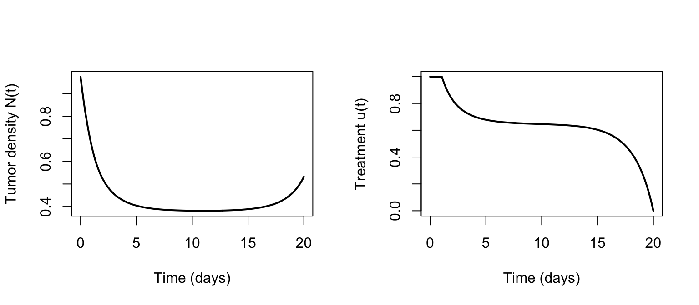
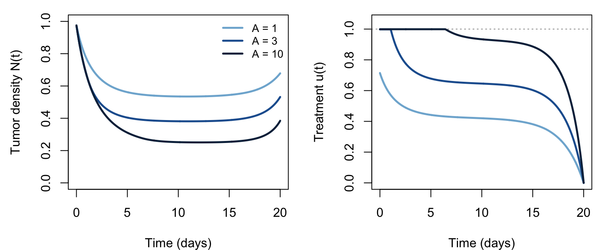
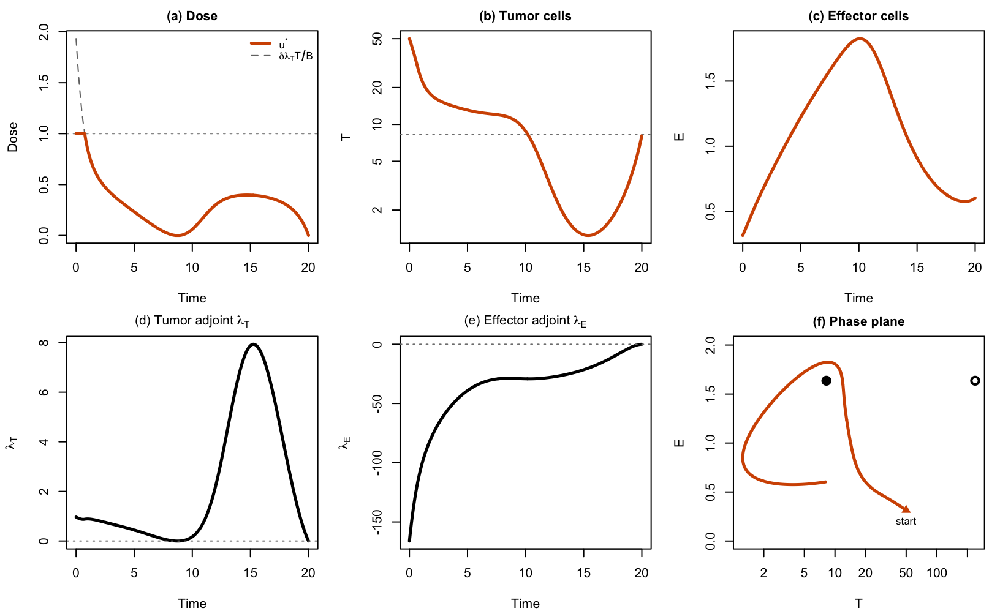
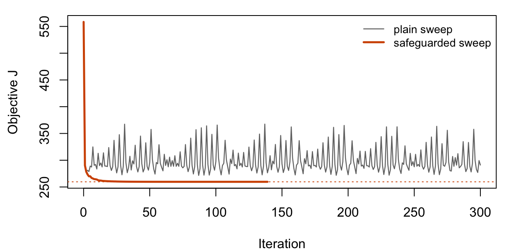
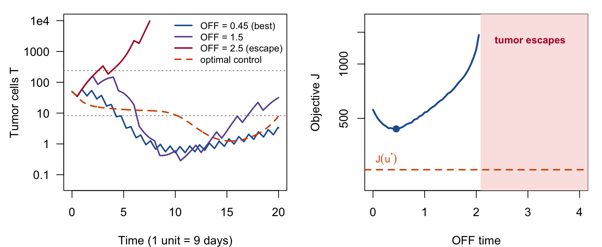

Chapter 5 Optimal Control
Mathematical models of cancer describe how tumor populations evolve over time and how they interact with the immune system, treatment, and their surrounding environment. While these models can provide insight into tumor dynamics and treatment response, they often assume that treatment is prescribed according to a fixed schedule.
Optimal control theory extends this framework by treating therapy as a time-dependent decision variable. Rather than simply predicting tumor evolution under a prescribed treatment, we seek a treatment strategy that optimizes a specified therapeutic objective.
In cancer modeling, this objective typically involves balancing tumor reduction against treatment-related toxicity, drug consumption, or damage to healthy tissue. The resulting mathematical problem combines a system of differential equations describing tumor dynamics with an objective functional measuring the performance of a treatment strategy.
Optimal control has been applied to several cancer treatment problems, including chemotherapy, immunotherapy, and combination therapy. Examples include studies of competing chemotherapy strategies, immune-mediated tumor dynamics, and treatment optimization in the presence of drug resistance (Fister and Panetta 2003; de Pillis and Radunskaya 2001; de Pillis et al. 2006; Carrère 2017).
This chapter introduces the mathematical foundations of optimal control for ordinary differential equation (ODE) models of cancer. We begin with the general formulation of an optimal control problem, followed by Pontryagin’s Maximum Principle and the derivation of the associated optimality system. A Gompertzian tumor-growth model is then used to illustrate the derivation and numerical solution of an optimal treatment strategy using the forward–backward sweep method.
Throughout the chapter, each new concept is followed by an example for a second model: a simplified version of the tumor–immune model of Kuznetsov et al. (1994), presented in Section 3.1, in which the tumor has no carrying capacity. The examples are numbered within the chapter, separately from the definitions and theorems.
5.1 Formulation of an Optimal Control Problem
An optimal control problem consists of three main components:
- A dynamical system describing the evolution of the state variables.
- A set of admissible controls representing the allowable interventions.
- An objective functional measuring the performance of different control strategies.
5.1.1 State equations, controls, and objective
Let \(x(t)\in\mathbb{R}^n\) denote the state vector, which may include tumor cells, immune effector cells, and drug concentrations, and let \(u(t)\in\mathbb{R}^m\) denote the treatment input, such as a chemotherapy infusion rate, a drug dose, or an immunotherapy input. Treatment is subject to clinical limits, so at each time the control takes values in a set \(U\subset\mathbb{R}^m\) of allowed treatment levels. For a single treatment input a common choice is \(U=[0,M]\), where \(M\) is the maximum allowable treatment intensity.
Example 5.1 (Simplified Kuznetsov model) We use the Kuznetsov model of Section 3.1 in the dimensionless form (3.4)–(3.5) of Section 3.4, without immune resistance. One unit of \(E\) or \(T\) is \(10^6\) cells, and one unit of time is \(1/(n\cdot10^6)\approx 9.1\) days, with \(n\) from Table 3.1. We remove the carrying capacity of the tumor (\(b=0\)), so that without immune killing the tumor grows exponentially, and add chemotherapy with intensity \(u(t)\):
\[\begin{aligned} E'&=s+\frac{p\,E\,T}{g+T}-m\,E\,T-d\,E, &\qquad E(0)&=E_0,\\ T'&=a\,T-E\,T-\delta\,u(t)\,T, &\qquad T(0)&=T_0. \end{aligned}\]
The parameters \(s\), \(p\), \(g\), \(m\), \(d\), and \(a\) have the meanings and dimensionless values of Table 3.2. The new term \(-\delta uT\) is the killing of tumor cells by the drug, at rate \(\delta\) per unit of treatment intensity. The state is \(x=(E,T)^\top\in\mathbb{R}^2\) and the control is scalar. The values used for treatment, cost, and initial conditions are listed in Table 5.1.
| Parameter | Value | Meaning |
|---|---|---|
| \(\delta\) | 2 | drug kill rate at full dose |
| \(M\) | 1 | maximum dose (fraction of the maximum tolerated dose) |
| \(A\), \(B\) | 1, 50 | weights in the objective functional |
| \(t_f\) | 20 | treatment horizon (about 180 days) |
| \(E_0\) | \(s/d\approx 0.316\) | resting level of effector cells |
| \(T_0\) | 50 | initial tumor (\(5\times10^7\) cells) |
Without treatment (\(u\equiv0\)), the tumor-free equilibrium \((s/d,0)\) is unstable, because \(s/d<a\) (Proposition 3.1, with \(n=1\) in dimensionless form); its eigenvalue in the tumor direction is \(a-s/d\approx 1.32\). With \(b=0\), the coexistence equilibria satisfy \(E=a\), and \(T\) solves \(s+paT/(g+T)-maT-da=0\). For the values of Table 3.2 there are two: a stable dormant state with \(T\approx 8.24\) (a stable spiral, with eigenvalues \(-0.036\pm 0.581\,i\)) and a saddle with \(T\approx 238.1\). Removing the carrying capacity changes these two equilibria only moderately (compare \(T_2\approx 8.19\) and \(T_3\approx 268\), in units of \(10^6\) cells, computed after Table 3.1), but it removes the large-tumor equilibrium \((E_4,T_4)\). Initial states on one side of the stable manifold of the saddle are attracted to the dormant state; on the other side the tumor grows without bound. Figure 5.1 shows that, with the immune system at its resting level \(E_0=s/d\), a tumor of \(T_0=1\) is controlled: it oscillates around the dormant state and slowly settles into it. A tumor of \(T_0=50\) escapes. Treatment therefore has a clear aim: to move the state into the region that the immune system controls.

Figure 5.1: Untreated simplified Kuznetsov model with \(E_0=s/d\). Left: a small tumor (\(T_0=1\)) oscillates around the dormant state and slowly settles into it, while a larger tumor (\(T_0=50\)) escapes; the simulation stops when \(T\) exceeds \(10^4\). Right: the same trajectories in the \((T,E)\) plane, with the dormant state (filled circle) and the saddle (open circle).
Definition 5.1 (Admissible Controls) Let \(U\subseteq\mathbb{R}^m\) represent the set of allowable control values. The set of admissible controls is
\[\mathcal{U} = \left\{ u:[0,t_f]\rightarrow U \mid u \text{ is Lebesgue measurable} \right\}.\]
For a scalar control with \(U=[0,M]\), the admissible controls satisfy
\[0\leq u(t)\leq M\]
for almost every \(t\in[0,t_f]\).
Example 5.2 (Admissible chemotherapy schedules) In Example 5.1 the treatment intensity is measured as a fraction of the maximum tolerated dose, so \(U=[0,M]\) with \(M=1\). Every measurable schedule with values in \([0,1]\) is admissible. In particular, the ON–OFF schedule that gives the full dose for a time \(\tau_{\mathrm{on}}\) and then pauses for a time \(\tau_{\mathrm{off}}\),
\[u_{\tau_{\mathrm{off}}}(t)= \begin{cases} M, & \text{if } t-k(\tau_{\mathrm{on}}+\tau_{\mathrm{off}})\in[0,\tau_{\mathrm{on}}) \text{ for some integer } k\geq0,\\ 0, & \text{otherwise}, \end{cases}\]
is piecewise constant, hence measurable, and therefore admissible. Continuous treatment at full dose is the case \(\tau_{\mathrm{off}}=0\). Section 5.5 compares these schedules with the optimal control.
Definition 5.2 (Optimal Control Problem) Given the functions
\[g:[0,t_f]\times\mathbb{R}^n\times U \rightarrow\mathbb{R}^n,\]
\[f:[0,t_f]\times\mathbb{R}^n\times U \rightarrow\mathbb{R},\]
and
\[\phi:\mathbb{R}^n\rightarrow\mathbb{R},\]
the optimal control problem is to minimize
\[J(u) = \int_0^{t_f} f(t,x(t),u(t))\,dt + \phi(x(t_f))\]
over all \(u\in\mathcal{U}\), subject to the state equations
\[x'(t)=g(t,x(t),u(t)), \qquad x(0)=x_0, \qquad 0\leq t\leq t_f.\]
Here, \(f\) is the running cost, \(\phi\) is the terminal cost, and \(J\) is the objective functional.
For each admissible control \(u\), the corresponding solution \(x=x(u)\) is called the associated state.
Example 5.3 (An optimal control problem for the Kuznetsov model) For Example 5.1 we take
\[J(u)=\int_0^{t_f}\Bigl(A\,T(t)+\frac{B}{2}\,u(t)^2\Bigr)\,dt,\]
so that the running cost is \(f(t,x,u)=A\,T+\tfrac{B}{2}u^2\) and the terminal cost is \(\phi=0\). The first term is the accumulated tumor burden and the second the accumulated burden of treatment. The problem is to minimize \(J\) over \(u\in\mathcal{U}\) subject to the state equations of Example 5.1, with the values of Table 5.1.
Definition 5.3 (Optimal Control and Optimal State) An admissible control \(u^*\in\mathcal{U}\) is an optimal control if \(J(u^*)\) is finite and
\[J(u^*)\leq J(u) \qquad \text{for all }u\in\mathcal{U}.\]
The corresponding state \(x^*=x(u^*)\) is called the optimal state, and the pair \((x^*,u^*)\) is called an optimal pair.
Example 5.4 (The optimal control as a benchmark) Since every ON–OFF schedule of Example 5.2 is admissible, Definition 5.3 gives
\[J(u^*)\leq J(u_{\tau_{\mathrm{off}}})\qquad\text{for every }\tau_{\mathrm{off}}\geq0 .\]
The optimal control is therefore a benchmark for simpler clinical schedules: no ON–OFF schedule, whatever its pause, can do better. Section 5.5 computes \(u^*\) and measures how far ON–OFF schedules are from it.
5.1.2 Components of the objective functional
In cancer models, the running cost may penalize tumor burden, treatment intensity, or other undesirable outcomes. A terminal cost can additionally penalize the remaining tumor population at the end of the treatment period. Some commonly used terms are summarized in Table 5.2.
| Term | Interpretation | Comment |
|---|---|---|
| \(A\,T(t)\) or \(A\,T(t)^2\) | Tumor burden | The quadratic term penalizes larger tumor populations more heavily. |
| \(\frac{B}{2}u(t)^2\) | Treatment intensity | Penalizes high treatment intensities and produces a strictly convex quadratic control cost. |
| \(B\,u(t)\) | Drug consumption | Penalizes cumulative drug delivery and may lead to bang-bang or singular controls. |
| \(-C\,E(t)\) | Immune response | Rewards larger immune effector populations. |
| \(C\,T(t_f)\) | Terminal tumor burden | Penalizes the remaining tumor population at the end of treatment. |
The coefficients \(A\), \(B\), and \(C\) determine the relative importance of the different components of the objective functional. Their appropriate values depend on the model, the scaling of the state variables, and the therapeutic objectives. Consequently, they should be interpreted in the context of the particular application, and sensitivity to their values should be examined.
Example 5.5 (Choosing the weights) The objective functional of Example 5.3 uses the tumor-burden term \(A\,T\) and the quadratic treatment term of Table 5.2. Because \(T\) is measured in units of \(10^6\) cells and \(u\) is a fraction of the maximum dose, the weights must be read on these scales. With \(A=1\) and \(B=50\), one time unit at full dose adds \(B/2=25\) to \(J\), as much as one time unit with a tumor of 25 units (\(2.5\times10^7\) cells). Adding \(-C\,E\) would reward schedules that preserve the immune response, and adding \(C\,T(t_f)\) would penalize the tumor left at the end of treatment.
5.1.3 Why use a quadratic treatment cost?
A quadratic treatment cost is frequently used in optimal control models of cancer. For example, including a term \(Bu(t)^2/2\) penalizes high treatment intensities more heavily than low ones. This can represent the increasing burden associated with intensive treatment.
The quadratic formulation also has a mathematical advantage: it produces a strictly convex Hamiltonian with respect to the control when \(B>0\) and the remaining dynamics are affine in \(u\). Consequently, the unconstrained optimal control can often be obtained explicitly and then restricted to its admissible interval.
In contrast, a linear treatment cost may produce bang-bang controls, in which treatment switches between its minimum and maximum allowable levels. Singular controls may also arise and require additional analysis (Lenhart and Workman 2007; Schättler and Ledzewicz 2015).
Example 5.6 (Linear treatment cost and ON--OFF control) If the treatment term in Example 5.3 were \(B\,u\) instead of \(\tfrac{B}{2}u^2\), the Hamiltonian (Example 5.8) would be linear in \(u\), with coefficient \(B-\delta\lambda_T T\). Minimizing it over \([0,M]\) gives the full dose \(u=M\) where \(B-\delta\lambda_TT<0\) and no drug where \(B-\delta\lambda_TT>0\). The optimal treatment is then of ON–OFF type, but its switching times are determined by the adjoint \(\lambda_T\) rather than fixed in advance; a singular arc can occur where \(B-\delta\lambda_TT\) vanishes on an interval. With the quadratic cost, the optimal dose can also take intermediate values.
5.1.4 Existence of an optimal control
Theorem 5.1 (Existence of an Optimal Control; Fleming and Rishel) Consider the optimal control problem in Definition 5.2 with \(\phi=0\). Suppose the following conditions hold:
The set of admissible controls with corresponding state solutions is nonempty.
The control set \(U\) is closed and convex.
The function \(g(t,x,u)\) is continuous and affine in the control, so that
\[g(t,x,u) = \alpha(t,x)+\beta(t,x)u.\]
Furthermore, there exists a constant \(C>0\) such that
\[|g(t,x,u)| \leq C(1+|x|+|u|).\]
The running cost \(f(t,x,u)\) is convex with respect to \(u\) on \(U\).
There exist constants \(c_1>0\), \(c_2\), and \(p>1\) such that
\[f(t,x,u) \geq c_1|u|^p-c_2.\]
Then there exists an optimal control \(u^*\in\mathcal{U}\) for which \(J(u^*)\) is finite.
Theorem 5.1 is a special case of the existence results of Fleming and Rishel (1975).
Example 5.7 (Existence for the Kuznetsov problem) Theorem 5.1 applies to the problem of Example 5.3, although the untreated tumor can grow without bound. First, the states stay positive and bounded on \([0,t_f]\) for every admissible \(u\). Writing the tumor equation as
\[T(t)=T_0\exp\Bigl(\int_0^t\bigl(a-E(\xi)-\delta u(\xi)\bigr)\,d\xi\Bigr)\]
shows that \(T>0\), and \(T(t)\leq T_0e^{a t_f}\) as long as \(E\geq0\). Since \(E'=s>0\) whenever \(E=0\), the effector cells stay positive. Since \(pT/(g+T)<p\) and the terms \(-mET\) and \(-dE\) are nonpositive, \(E'\leq s+pE\), which gives \(E(t)\leq(E_0+s/p)\,e^{p t_f}\). Hence the state equations have a solution on \([0,t_f]\) for every admissible control, so condition 1 holds, and every trajectory stays in a fixed bounded box. The right-hand side may be modified outside a slightly larger box without changing any solution, so the growth bound in condition 3 holds, and it is affine in \(u\) because the control enters only through the term \(-\delta uT\). Finally, \(U=[0,1]\) is closed and convex, \(f=AT+\tfrac{B}{2}u^2\) is convex in \(u\), and \(f\geq\tfrac{B}{2}|u|^2\) because \(T\geq0\), so condition 5 holds with exponent 2. Hence an optimal control exists.
5.2 Pontryagin’s Maximum Principle
5.2.1 The Hamiltonian and adjoint equations
Definition 5.4 (Hamiltonian) The Hamiltonian associated with the optimal control problem in Definition 5.2 is
\[H(t,x,u,\lambda) = f(t,x,u)+\lambda^\top g(t,x,u).\]
Equivalently,
\[H(t,x,u,\lambda) = f(t,x,u) + \sum_{i=1}^{n} \lambda_i g_i(t,x,u),\]
where \(\lambda\in\mathbb{R}^n\) is the vector of adjoint variables, also called costate variables.
Example 5.8 (Hamiltonian for the Kuznetsov problem) With adjoint variables \(\lambda=(\lambda_E,\lambda_T)^\top\), the Hamiltonian of Example 5.3 is
\[H=A\,T+\frac{B}{2}u^2+\lambda_E\Bigl(s+\frac{pET}{g+T}-mET-dE\Bigr)+\lambda_T\bigl(aT-ET-\delta uT\bigr).\]
Theorem 5.2 (Pontryagin's Maximum Principle) Suppose \(u^*\) is an optimal admissible control and \(x^*\) is its corresponding state trajectory.
Under the standard differentiability and regularity assumptions for the normal case, there exists an absolutely continuous adjoint vector \(\lambda(t)\) satisfying the following necessary conditions.
State equations:
\[x^{*\prime}(t) = \frac{\partial H}{\partial\lambda} (t,x^*,u^*,\lambda), \qquad x^*(0)=x_0.\]
Adjoint equations:
\[\lambda'(t) = -\frac{\partial H}{\partial x} (t,x^*,u^*,\lambda).\]
Transversality condition:
\[\lambda(t_f) = \nabla_x\phi(x^*(t_f)).\]
Hamiltonian minimization condition:
\[H(t,x^*,u^*,\lambda) = \min_{v\in U} H(t,x^*,v,\lambda)\]
for almost every \(t\in[0,t_f]\).
The Maximum Principle is due to Pontryagin et al. (1962); Lenhart and Workman (2007) derive these conditions for problems of the form considered here.
Example 5.9 (Adjoint equations for the Kuznetsov problem) Differentiating the Hamiltonian of Example 5.8 with respect to the states, and using \(\frac{\partial}{\partial T}\frac{pET}{g+T}=\frac{pgE}{(g+T)^2}\), gives
\[\begin{aligned} \lambda_E'&=-\frac{\partial H}{\partial E}=-\lambda_E\Bigl(\frac{pT}{g+T}-mT-d\Bigr)+\lambda_T\,T,\\ \lambda_T'&=-\frac{\partial H}{\partial T}=-A-\lambda_E\Bigl(\frac{pgE}{(g+T)^2}-mE\Bigr)-\lambda_T\bigl(a-E-\delta u\bigr), \end{aligned}\]
with the transversality conditions \(\lambda_E(t_f)=\lambda_T(t_f)=0\), since \(\phi=0\). The state equations \(x'=\partial H/\partial\lambda\) are those of Example 5.1.
Definition 5.5 (Optimality System) The state equations, the adjoint equations with their transversality conditions, and the characterization of the optimal control obtained from the Hamiltonian minimization condition together form the optimality system.
Example 5.10 (Optimality system for the Kuznetsov problem) For the Kuznetsov problem, the optimality system consists of the two state equations of Example 5.1, the two adjoint equations of Example 5.9 with their transversality conditions, and the characterization of \(u^*\) obtained by minimizing the Hamiltonian over \([0,M]\), which is derived in Examples 5.12 and 5.13. The complete system is written out in Example 5.15.
5.2.2 Interpretation of adjoint variables
The adjoint variables are also commonly called costates or shadow prices. They describe the marginal effect of changes in the state variables on the optimal objective.
Informally, \(\lambda_i(t)\) measures how a small change in the state variable \(x_i(t)\) affects the optimal value of the objective, with the remaining problem appropriately reoptimized.
For example, if the tumor adjoint is positive, an increase in tumor burden increases the objective locally. The magnitude of the adjoint helps determine the value of reducing the tumor population through treatment.
The biological interpretation of an adjoint variable depends on the objective functional. In particular, an immune-cell adjoint need not have the same sign or interpretation as a tumor-cell adjoint.
Example 5.11 (Signs of the Kuznetsov adjoints) In Example 5.9, \(\lambda_T(t)\) is the marginal cost of one additional unit of tumor at time \(t\), and \(\lambda_E(t)\) the marginal cost of one additional unit of effector cells. For the computed solution (Figure 5.4), \(\lambda_E\leq0\) on the whole interval: extra effector cells kill tumor cells and so lower the cost. The tumor adjoint is positive except on the short interval \(8.58\leq t\leq 8.90\), where it is slightly negative (its minimum is \(-0.0021\)). On this interval an additional tumor cell stimulates enough recruitment of effector cells to lower the total cost slightly. The sign of an adjoint must therefore be read from the model, not assumed.
5.2.3 Interior optimal controls
When the optimal control lies strictly inside its admissible interval, it must satisfy the first-order optimality condition
\[\frac{\partial H}{\partial u}=0.\]
For a scalar control, a necessary second-order condition for a local minimum with respect to the control is
\[\frac{\partial^2 H}{\partial u^2}\geq 0.\]
For multiple controls, the corresponding condition involves the positive semidefiniteness of the Hessian with respect to the control variables. These conditions characterize interior minimizers. When controls are subject to bounds, the minimization must instead be performed over the admissible interval.
Example 5.12 (Interior control for the Kuznetsov problem) From the Hamiltonian of Example 5.8,
\[\frac{\partial H}{\partial u}=B\,u-\delta\,\lambda_T\,T,\qquad\frac{\partial^2 H}{\partial u^2}=B>0 .\]
The Hamiltonian is strictly convex in \(u\), and on any interval where \(0<u^*<M\),
\[u^*(t)=\widetilde u(t)=\frac{\delta\,\lambda_T(t)\,T^*(t)}{B}.\]
The dose is proportional to \(\lambda_T\,T\), the marginal cost of the tumor multiplied by the number of tumor cells the drug can act on, and inversely proportional to the price \(B\) of treatment.
5.2.4 Bounded optimal controls
Consider a scalar control with \(U=[u_{\min},u_{\max}]\), so that \(u_{\min}\leq u(t)\leq u_{\max}\). The pointwise minimization of the Hamiltonian gives the following characterization:
\[\begin{cases} u^*(t)=u_{\min}, & \dfrac{\partial H}{\partial u}>0,\\[8pt] u_{\min}<u^*(t)<u_{\max}, & \dfrac{\partial H}{\partial u}=0,\\[8pt] u^*(t)=u_{\max}, & \dfrac{\partial H}{\partial u}<0, \end{cases}\]
where \(\partial H/\partial u\) is evaluated at \((t,x^*(t),u^*(t),\lambda(t))\). Equivalently, if \(u^*(t)=u_{\min}\) then \(\partial H/\partial u\geq 0\), and if \(u^*(t)=u_{\max}\) then \(\partial H/\partial u\leq 0\).
For a strictly convex quadratic Hamiltonian, solving the first-order condition gives an unconstrained minimizer, denoted by \(\widetilde{u}(t)\). The bounded optimal control is then obtained by projecting this value onto the admissible interval:
\[u^*(t)=\min\left\{u_{\max},\,\max\{u_{\min},\widetilde{u}(t)\}\right\}.\]
This projection formula is used in the numerical implementations later in the chapter.
Example 5.13 (Bounded control for the Kuznetsov problem) With \(U=[0,M]\), the projection formula gives
\[u^*(t)=\min\Bigl\{M,\,\max\Bigl\{0,\,\frac{\delta\,\lambda_T(t)\,T^*(t)}{B}\Bigr\}\Bigr\}.\]
For the values of Table 5.1, the upper bound is active at the start of treatment: the computed schedule gives the full dose until \(t\approx 0.7\) (about 7 days), after which \(\delta\lambda_TT/B\) falls below \(M\) (Figure 5.4).
5.2.5 Multiple states and multiple controls
For a model with \(n\) state variables and \(m\) control variables, there is one adjoint equation for each state variable and one pointwise minimization condition for each control variable. The adjoint equation associated with the state variable \(x_i\) is
\[\lambda_i'=-\frac{\partial H}{\partial x_i}=-\left(\frac{\partial f}{\partial x_i}+\sum_{j=1}^{n}\lambda_j\frac{\partial g_j}{\partial x_i}\right).\]
In matrix notation, this becomes
\[\lambda'=-\nabla_x f-\left(\frac{\partial g}{\partial x}\right)^\top\lambda.\]
Thus, the adjoint system depends on the transpose of the Jacobian matrix of the state equations. This relationship is particularly useful when deriving optimality systems for cancer models with several interacting tumor and immune-cell populations.
Example 5.14 (Adjoint system in matrix form) For the Kuznetsov problem, \(x=(E,T)^\top\) and \(\nabla_x f=(0,A)^\top\). The Jacobian matrix of the state equations is the Jacobian computed before Proposition 3.1, with \(b=0\) and \(n=1\) and with the drug term \(-\delta u\) added to its last entry, and the matrix form of the adjoint equations reads
\[\begin{pmatrix}\lambda_E'\\[4pt] \lambda_T'\end{pmatrix} =-\begin{pmatrix}0\\[4pt] A\end{pmatrix} -\begin{pmatrix} \dfrac{pT}{g+T}-mT-d & -T\\[10pt] \dfrac{pgE}{(g+T)^2}-mE & a-E-\delta u \end{pmatrix} \begin{pmatrix}\lambda_E\\[4pt] \lambda_T\end{pmatrix},\]
where the matrix is the transpose of the Jacobian. Multiplying out reproduces the adjoint equations of Example 5.9. The transpose moves each interaction into the equation of the other adjoint: the killing of tumor cells by effector cells, which gives the entry \(\partial T'/\partial E=-T\) of the Jacobian, appears as the term \(+\lambda_TT\) in the equation for \(\lambda_E\), and the recruitment of effector cells by the tumor, which gives the entry \(\partial E'/\partial T=pgE/(g+T)^2-mE\), appears in the equation for \(\lambda_T\).
Example 5.15 (The complete optimality system) Collecting Examples 5.1, 5.9, and 5.13, the optimality system for the Kuznetsov problem is
\[\begin{aligned} E'&=s+\frac{pET}{g+T}-mET-dE,\\ T'&=aT-ET-\delta u^*T,\\ \lambda_E'&=-\lambda_E\Bigl(\frac{pT}{g+T}-mT-d\Bigr)+\lambda_TT,\\ \lambda_T'&=-A-\lambda_E\Bigl(\frac{pgE}{(g+T)^2}-mE\Bigr)-\lambda_T(a-E-\delta u^*),\\ u^*&=\min\Bigl\{M,\,\max\Bigl\{0,\,\frac{\delta\lambda_TT}{B}\Bigr\}\Bigr\}, \end{aligned}\]
with \(E(0)=E_0\), \(T(0)=T_0\), and \(\lambda_E(t_f)=\lambda_T(t_f)=0\). The two states run forward from \(t=0\) and the two adjoints run backward from \(t=t_f\); they are coupled through \(u^*\) and through the products \(ET\) and \(\lambda_TT\).
5.2.6 Sufficient conditions
Theorem 5.3 (Sufficiency; Mangasarian) Suppose the control set \(U\) is convex, the terminal cost \(\phi\) is convex and differentiable, and an admissible control \(u^*\in\mathcal{U}\) with corresponding state \(x^*\) and an absolutely continuous adjoint vector \(\lambda\) satisfies the state equations, adjoint equations, transversality condition, and Hamiltonian minimization condition.
If, for almost every \(t\in[0,t_f]\), the mapping
\[(x,u) \mapsto H(t,x,u,\lambda(t))\]
is convex on \(\mathbb{R}^n\times U\), then \(u^*\) is an optimal control.
If the mapping is strictly convex, then \(u^*\) is the unique optimal control.
This sufficiency result is due to Mangasarian (1966).
Example 5.16 (Sufficiency fails for the Kuznetsov problem) The Hamiltonian of Example 5.8 is affine in \(E\), so \(\partial^2H/\partial E^2=0\), while
\[\frac{\partial^2H}{\partial E\,\partial T}=\lambda_E\Bigl(\frac{pg}{(g+T)^2}-m\Bigr)-\lambda_T .\]
Whenever this mixed derivative is nonzero, the Hessian of \(H\) with respect to \((E,T)\) has determinant \(-(\partial^2H/\partial E\,\partial T)^2<0\), so \(H\) is not convex in \((x,u)\) and Theorem 5.3 does not apply. Optimality of the computed solution therefore rests on existence (Example 5.7) together with uniqueness of the solution of the optimality system.
5.2.7 Uniqueness
Definition 5.6 (Uniqueness of the Optimal Control) An optimal control \(u^*\) is unique if every other optimal control \(u\) satisfies
\[u(t)=u^*(t) \qquad \text{for almost every }t\in[0,t_f].\]
If the state equations have a unique solution for each admissible control, the corresponding optimal state is also unique.
Example 5.17 (Checking uniqueness numerically) Uniqueness of the optimal control is difficult to prove for nonlinear models over long time horizons, and the Kuznetsov problem with \(t_f=20\) is no exception. A practical check is to solve the optimality system from several initial guesses. Starting the safeguarded sweep of Section 5.5.2 from full-dose treatment, half-dose treatment, and the ON–OFF schedules with \(\tau_{\mathrm{on}}=0.5\) and \(\tau_{\mathrm{off}}=0.5\) or \(1\) gives the same control and the same value \(J=259.65\) in all four cases. This does not prove uniqueness, but it is reassuring.
5.3 A Gompertzian Tumor-Growth Model
To illustrate the derivation and numerical solution of an optimal treatment strategy, consider a tumor population \(N(t)\) that follows Gompertzian growth in the absence of treatment, and let \(u(t)\) represent the intensity of a chemotherapy treatment. The controlled model is
\[\frac{dN}{dt}=rN\ln\left(\frac{1}{N}\right)-\delta u(t)N,\qquad N(0)=N_0,\]
where \(r>0\) is the tumor growth parameter, \(\delta>0\) represents treatment efficacy, and \(0<N_0<1\). Here, the tumor population is normalized so that the carrying capacity is one. The first term describes Gompertzian tumor growth, while the second represents treatment-induced tumor reduction.
Proposition 5.1 (Bounds on the tumor density) For every admissible control \(u\) with \(0\leq u\leq M\), the solution of the Gompertzian model with \(0<N_0<1\) satisfies \(0<N(t)<1\) for all \(t\in[0,t_f]\).
Proof. Writing the model as \(N'=N\bigl(r\ln(1/N)-\delta u\bigr)\) gives
\[N(t)=N_0\exp\left(\int_0^t\bigl(r\ln(1/N(\xi))-\delta u(\xi)\bigr)\,d\xi\right)>0 .\]
Since \(N'\leq rN\ln(1/N)\) and \(N\equiv 1\) is an equilibrium of the untreated equation, the comparison principle gives \(N(t)<1\).
We seek a treatment strategy that reduces tumor burden while avoiding unnecessarily intensive chemotherapy. For this purpose, consider the objective functional
\[J(u)=\int_0^{t_f}\left[AN(t)^2+u(t)^2\right]dt,\]
subject to the state equation and the control constraint \(0\leq u(t)\leq M\). The parameter \(A>0\) determines the relative importance of reducing tumor burden, while the quadratic control term penalizes intensive treatment. There is no terminal cost in this formulation. Therefore, the objective measures tumor burden and treatment intensity over the entire treatment period rather than penalizing only the tumor population at the final time.
Theorem 5.1 applies to this problem. Take \(U=[0,M]\). Since \(0<N(t)<1\) for all \(t\) (Proposition 5.1) and \(0\leq N\ln(1/N)\leq e^{-1}\) on \((0,1]\), the right-hand side \(rN\ln(1/N)-\delta uN\) is affine in \(u\) and bounded by \(r/e+\delta M\). The integrand \(AN^2+u^2\) is convex in \(u\) and satisfies \(AN^2+u^2\geq |u|^2\), so condition 5 holds with exponent 2. Hence an optimal control exists.
5.4 Derivation of the Optimality System for the Gompertzian Model and numerical solution
5.4.1 Hamiltonian and adjoint equation
Introducing the adjoint variable \(\lambda(t)\), the Hamiltonian is
\[H=AN^2+u^2+\lambda\left[rN\ln\left(\frac{1}{N}\right)-\delta uN\right].\]
The adjoint equation is obtained from \(\lambda'=-\partial H/\partial N\). Differentiating the Hamiltonian with respect to \(N\) gives
\[\frac{\partial H}{\partial N}=2AN+\lambda\left[r\ln\left(\frac{1}{N}\right)-r-\delta u\right].\]
Therefore, the adjoint equation is
\[\lambda'=-2AN-\lambda\left[r\ln\left(\frac{1}{N}\right)-r-\delta u\right].\]
Since the objective functional does not contain a terminal cost, the transversality condition is \(\lambda(t_f)=0\).
5.4.2 Optimal control characterization
The optimality condition is obtained by differentiating the Hamiltonian with respect to \(u\):
\[\frac{\partial H}{\partial u}=2u-\lambda\delta N.\]
For an interior optimal control, \(2u-\lambda\delta N=0\), which gives the unconstrained optimal control
\[\widetilde{u}(t)=\frac{\lambda(t)\delta N(t)}{2}.\]
Since the treatment intensity is constrained by \(0\leq u(t)\leq M\), the optimal control is
\[u^*(t)=\min\left\{M,\,\max\left\{0,\frac{\lambda(t)\delta N(t)}{2}\right\}\right\}.\]
The resulting optimality system consists of the state equation, adjoint equation, and optimal control characterization:
\[\begin{aligned} N'&=rN\ln\left(\frac{1}{N}\right)-\delta u^*N, & N(0)&=N_0,\\ \lambda'&=-2AN-\lambda\left[r\ln\left(\frac{1}{N}\right)-r-\delta u^*\right], & \lambda(t_f)&=0,\\ u^*&=\min\left\{M,\,\max\left\{0,\frac{\lambda\delta N}{2}\right\}\right\}. \end{aligned}\]
The state and adjoint equations are coupled through the optimal control. Moreover, the state has an initial condition, whereas the adjoint has a terminal condition. Consequently, the system forms a two-point boundary value problem.
Theorem 5.3 does not apply directly to this problem. Since \(\partial^2\bigl(N\ln(1/N)\bigr)/\partial N^2=-1/N<0\), the Hamiltonian is not convex in \(N\) when \(\lambda>0\). Optimality must therefore be argued through existence, shown in Section 5.3, together with uniqueness of the solution of the optimality system.
5.4.3 The forward–backward sweep method
The optimality system is a two-point boundary value problem: the state is specified at the initial time, while the adjoint is specified at the terminal time. The forward–backward sweep method (FBSM) is a numerical approach commonly used to approximate solutions to such systems. It alternates between solving the state equations forward in time and the adjoint equations backward in time, updating the control at each iteration (Lenhart and Workman 2007). A typical implementation consists of the following steps:
Discretize the interval \([0,t_f]\) into \(n\) time steps of size \(h=t_f/n\). Choose an initial guess for the control, such as \(u(t)\equiv 0\).
Using the current control, solve the state equations forward in time from the initial condition \(x(0)=x_0\).
Using the newly computed state trajectory, solve the adjoint equations backward in time from the terminal condition \(\lambda(t_f)\).
Update the control using its optimality characterization. For a quadratic control cost, this typically involves projecting the unconstrained control onto its admissible interval.
Relax the control update by taking a weighted average of the new and previous control values:
\[u_{\mathrm{updated}}=\theta u_{\mathrm{new}}+(1-\theta)u_{\mathrm{old}},\]
where \(0<\theta\leq 1\) is a relaxation parameter.
Repeat the forward and backward sweeps until the relative changes in the state, adjoint, and control trajectories fall below a prescribed tolerance.
The relaxation step can improve numerical stability and convergence in practice. However, convergence of the method is not guaranteed for every model, time horizon, or initial control guess. The choice of time discretization and relaxation parameter can therefore be important. A common convergence criterion is
\[\max\left\{\frac{\|u^{(k+1)}-u^{(k)}\|_1}{\max(\|u^{(k+1)}\|_1,\varepsilon)},\frac{\|x^{(k+1)}-x^{(k)}\|_1}{\max(\|x^{(k+1)}\|_1,\varepsilon)},\frac{\|\lambda^{(k+1)}-\lambda^{(k)}\|_1}{\max(\|\lambda^{(k+1)}\|_1,\varepsilon)}\right\}<\mathrm{tol},\]
where \(k\) denotes the iteration number, \(\mathrm{tol}\) is the prescribed tolerance, and \(\varepsilon>0\) is a small number used to avoid division by zero.
5.4.4 Implementation in R
For the Gompertzian model, the state and adjoint equations are those of the optimality system above. Both equations can be integrated numerically using the fourth-order Runge–Kutta method (RK4). The state equation is integrated forward from \(N(0)=N_0\), while the adjoint equation is integrated backward from \(\lambda(t_f)=0\). At each iteration, the control is updated by the projection formula. The following R implementation illustrates the forward–backward sweep procedure.
fbsm <- function(r = 0.3, A = 3, delta = 0.45, N0 = 0.975,
M = 1.0, tf = 20, n = 1000, tol = 1e-3,
max_iter = 500, theta = 0.5) {
h <- tf / n
t <- seq(0, tf, length.out = n + 1)
u <- numeric(n + 1)
N <- numeric(n + 1)
lam <- numeric(n + 1)
# Right-hand side of the state equation
fN <- function(N, u) {
r * N * log(1 / N) - delta * u * N
}
# Right-hand side of the adjoint equation
fl <- function(N, lam, u) {
-2 * A * N - lam * (r * log(1 / N) - r - delta * u)
}
eps <- 1e-12
err <- Inf
for (it in 1:max_iter) {
u_old <- u
N_old <- N
lam_old <- lam
# Forward sweep: state equation (RK4)
N[1] <- N0
for (i in 1:n) {
um <- 0.5 * (u[i] + u[i + 1])
k1 <- fN(N[i], u[i])
k2 <- fN(N[i] + h * k1 / 2, um)
k3 <- fN(N[i] + h * k2 / 2, um)
k4 <- fN(N[i] + h * k3, u[i + 1])
N[i + 1] <- N[i] + h / 6 * (k1 + 2 * k2 + 2 * k3 + k4)
}
# Backward sweep: adjoint equation (RK4)
lam[n + 1] <- 0
for (i in (n + 1):2) {
um <- 0.5 * (u[i] + u[i - 1])
Nm <- 0.5 * (N[i] + N[i - 1])
k1 <- fl(N[i], lam[i], u[i])
k2 <- fl(Nm, lam[i] - h * k1 / 2, um)
k3 <- fl(Nm, lam[i] - h * k2 / 2, um)
k4 <- fl(N[i - 1], lam[i] - h * k3, u[i - 1])
lam[i - 1] <- lam[i] - h / 6 * (k1 + 2 * k2 + 2 * k3 + k4)
}
# Optimal control update (projection onto [0, M])
u_star <- pmin(M, pmax(0, lam * delta * N / 2))
# Relaxation
u <- theta * u_star + (1 - theta) * u_old
# Relative convergence error
err_u <- sum(abs(u - u_old)) / max(sum(abs(u)), eps)
err_N <- sum(abs(N - N_old)) / max(sum(abs(N)), eps)
err_lam <- sum(abs(lam - lam_old)) / max(sum(abs(lam)), eps)
err <- max(err_u, err_N, err_lam)
if (err < tol) break
}
list(t = t, N = N, u = u, lam = lam,
iterations = it, error = err)
}The implementation returns the time vector, tumor trajectory, optimal treatment profile, adjoint trajectory, number of iterations, and final convergence error.
Iterations: 9 Final error: 0.000497 op <- par(mfrow = c(1, 2))
plot(sol$t, sol$N, type = "l", lwd = 2,
xlab = "Time (days)", ylab = "Tumor density N(t)")
plot(sol$t, sol$u, type = "l", lwd = 2,
xlab = "Time (days)", ylab = "Treatment u(t)")
Figure 5.2: Optimal tumor density and treatment for the Gompertzian model.
The numerical solution should be examined to verify that the control remains within its admissible bounds and that the state and adjoint trajectories satisfy their respective boundary conditions. It is also useful to evaluate the objective functional under the computed treatment strategy and compare it with the objective values obtained under simple alternative strategies, such as no treatment or a constant treatment intensity. Such comparisons provide a practical check on the numerical solution, although they do not independently establish global optimality.
5.4.5 Interactive example
The Shiny app app_gompertz.R solves the Gompertzian problem with the forward–backward sweep whenever a slider moves. It uses the safeguarded version of the sweep described in Section 5.5.2, because the plain sweep fails to converge for some parameter values, for example a strong drug combined with a long horizon. The sliders set the weight \(A\), the horizon \(t_f\), the growth rate \(r\), the efficacy \(\delta\), the initial density \(N_0\), and the bound \(M\). The app plots the optimal tumor density, dose, and adjoint, and compares \(J(u^*)\) with no treatment and with a constant dose that uses the same total amount of drug. With the shiny package installed, run it with

Figure 5.3: Optimal schedules for the Gompertzian model for three values of the weight \(A\) (other parameters as in the implementation above). Left: tumor density. Right: optimal dose, with the bound \(M=1\) dotted.
Figure 5.3 shows the pattern reported for this model by Lenhart and Workman (2007): a high initial dose that tapers to zero at the end of treatment, at a higher level when the tumor is weighted more heavily. The timing of the dose matters, not only its total amount: for \(A=3\) the optimal schedule gives \(J=20.628\), while a constant dose with the same total amount of drug gives \(J=21.812\). Things to explore with the app:
- Increase \(A\) from 1 to 10. Does the shape of \(u^*(t)\) change, or only its level?
- Lower \(N_0\) to 0.5. Which part of the schedule changes?
- Lower \(M\) until the bound is active over a longer interval, and relate the cut-off to the projection formula.
- Why does the dose fall to zero at \(t_f\)? Relate the answer to the transversality condition \(\lambda(t_f)=0\).
5.5 An Optimal Control Approach for the Kuznetsov Model
The examples of the previous sections set up the optimal control problem for the simplified Kuznetsov model and derived its optimality system (Example 5.15). This section solves the optimality system numerically and compares the optimal control with ON–OFF schedules.
5.5.1 Why the plain sweep fails
Example 5.18 (The plain sweep fails for the Kuznetsov model) For the Kuznetsov problem, the initial guess \(u\equiv0\) cannot be used: without treatment the tumor escapes (Figure 5.1), \(T\) grows by many orders of magnitude over \([0,t_f]\), and the computation breaks down. Starting from full-dose treatment, \(u\equiv M\), avoids this, but the forward–backward sweep with \(\theta=0.5\) still does not converge. After 300 iterations the relative change in the control is still 0.99, and the objective keeps oscillating between about 272 and 367 (Figure 5.5). An update computed from the adjoint of one control overshoots, and the next update moves back.
5.5.2 A safeguarded sweep
The relaxation step of the forward–backward sweep can be made safe by checking the objective functional. The justification rests on a formula for the derivative of \(J\) that holds for every admissible control, optimal or not.
Lemma 5.1 (Derivative of the objective functional) Assume that \(f\), \(g\), and \(\phi\) are continuously differentiable. Let \(u\) and \(l\) be bounded measurable functions such that \(u+\varepsilon l\in\mathcal{U}\) for all small \(\varepsilon>0\), let \(x\) be the state of \(u\), and let \(\lambda\) solve the adjoint equations
\[\lambda'=-\frac{\partial H}{\partial x}(t,x,u,\lambda),\qquad\lambda(t_f)=\nabla_x\phi(x(t_f)),\]
along \((x,u)\). Then
\[\lim_{\varepsilon\to0^+}\frac{J(u+\varepsilon l)-J(u)}{\varepsilon}=\int_0^{t_f}\frac{\partial H}{\partial u}\bigl(t,x(t),u(t),\lambda(t)\bigr)\,l(t)\,dt .\]
The proof differentiates the state with respect to the control and integrates by parts against the adjoint; it is the first half of the derivation of the Maximum Principle in Lenhart and Workman (2007, ch. 1). In this sense \(\partial H/\partial u\) is the gradient of \(J\), and one backward solve of the adjoint equations gives the derivative of \(J\) in every direction \(l\).
Proposition 5.2 (The sweep update is a descent direction) Let \(U=[u_{\min},u_{\max}]\) and suppose that, along \((x,u,\lambda)\),
\[\frac{\partial H}{\partial u}=B\bigl(u-\widetilde u(t)\bigr)\]
for a constant \(B>0\) and some function \(\widetilde u\), as is the case when \(H\) contains the term \(\tfrac{B}{2}u^2\) and is otherwise affine in \(u\). Let \(\bar u=\min\{u_{\max},\max\{u_{\min},\widetilde u\}\}\) be the updated control of step 4 of the sweep and \(\Delta u=\bar u-u\). Then
\[\lim_{\varepsilon\to0^+}\frac{J(u+\varepsilon\,\Delta u)-J(u)}{\varepsilon}\leq -B\int_0^{t_f}\Delta u(t)^2\,dt .\]
Consequently, unless \(\Delta u=0\) almost everywhere, \(J(u+\theta\,\Delta u)<J(u)\) for all sufficiently small \(\theta>0\). Moreover, \(u+\theta\,\Delta u\) is admissible for \(0\leq\theta\leq1\).
Proof. Since \(\bar u\) is the point of \([u_{\min},u_{\max}]\) closest to \(\widetilde u\) and \(u(t)\) lies in this interval, \((\widetilde u-\bar u)(u-\bar u)\leq0\). Hence, pointwise,
\[\frac{\partial H}{\partial u}\,\Delta u=-B(\widetilde u-u)(\bar u-u)=B(\widetilde u-\bar u)(u-\bar u)-B(\bar u-u)^2\leq -B\,\Delta u^2 .\]
Integrating and applying Lemma 5.1 with \(l=\Delta u\) gives the inequality. Finally, \(u+\theta\,\Delta u=(1-\theta)u+\theta\bar u\) is a convex combination of two functions with values in \(U\).
The relaxed update of step 5 of the sweep is exactly \(u_{\mathrm{updated}}=\theta\bar u+(1-\theta)u=u+\theta\,\Delta u\). The plain sweep uses a fixed \(\theta\), which may be too long a step. The safeguarded sweep chooses \(\theta\) by backtracking, replacing step 5 by the following rule.
Step 5\('\). Compute the candidate \(u+\theta\,\Delta u\), solve the state equations for it, and evaluate \(J\). If \(J\) has decreased, accept the candidate and set \(\theta\leftarrow\min\{\theta_0,2\theta\}\); otherwise halve \(\theta\) and try again.
By Proposition 5.2, a small enough \(\theta\) lowers \(J\) unless \(\Delta u=0\), so every accepted step decreases \(J\) and the iteration cannot oscillate. It stops when \(\|\Delta u\|_1/\|u\|_1<\mathrm{tol}\), that is, when \(u\) satisfies the control characterization, and hence the optimality system, up to the tolerance. The safeguarded sweep has the same fixed points as the plain sweep. Like any descent method, it finds a solution of the optimality system near its starting point, which need not be the global minimizer when the problem is not convex; Example 5.17 describes a practical check.
5.5.3 Implementation in R
Example 5.19 (Optimal chemotherapy for the Kuznetsov model) The code below implements the safeguarded sweep for the optimality system of Example 5.15. It follows the Gompertzian code, with two states and two adjoints instead of one. The parameters are stored in the list kuz_par under the names of Example 5.1, with delta for \(\delta\). The forward sweep stops when the tumor exceeds \(10^4\) units (\(10^{10}\) cells), which we treat as escape, with cost \(J=\infty\). The sweep starts from full-dose treatment (Example 5.18), and setting safeguard = FALSE gives the plain sweep.
kuz_par <- list(s = 0.1181, p = 1.131, g = 20.19, m = 0.00311,
d = 0.3743, a = 1.636, # Kuznetsov et al. (1994)
delta = 2, M = 1, # drug kill rate, max dose
A = 1, B = 50, tf = 20, # cost weights, horizon
E0 = 0.1181 / 0.3743, T0 = 50) # E0 = s / d
T_fail <- 1e4 # 10^10 cells: tumor escape, treatment failure
# Right-hand side of the state equations
kuz_rhs <- function(E, T, u, pars) {
c(pars$s + pars$p * E * T / (pars$g + T) - pars$m * E * T - pars$d * E,
pars$a * T - E * T - pars$delta * u * T)
}
# Right-hand side of the adjoint equations
kuz_adj <- function(E, T, lE, lT, u, pars) {
c(-lE * (pars$p * T / (pars$g + T) - pars$m * T - pars$d) + lT * T,
-pars$A - lE * (pars$p * pars$g * E / (pars$g + T)^2 - pars$m * E) -
lT * (pars$a - E - pars$delta * u))
}
# Equilibria of the untreated model with E = a: the dormant state
# (about T = 8.24) and the saddle (about T = 238)
kuz_equilibria <- function(pars) {
f <- function(T) pars$s + pars$p * pars$a * T / (pars$g + T) -
pars$m * pars$a * T - pars$d * pars$a
grid <- seq(0.01, 2000, length.out = 20001)
k <- which(diff(sign(f(grid))) != 0)
vapply(k, function(i) uniroot(f, grid[c(i, i + 1)], tol = 1e-10)$root,
numeric(1))
}# One RK4 step of the state equations; u1, um, u2 are the controls
# at the start, middle, and end of the step
kuz_step <- function(E, T, u1, um, u2, h, pars) {
k1 <- kuz_rhs(E, T, u1, pars)
k2 <- kuz_rhs(E + h * k1[1] / 2, T + h * k1[2] / 2, um, pars)
k3 <- kuz_rhs(E + h * k2[1] / 2, T + h * k2[2] / 2, um, pars)
k4 <- kuz_rhs(E + h * k3[1], T + h * k3[2], u2, pars)
c(E, T) + h / 6 * (k1 + 2 * k2 + 2 * k3 + k4)
}
# Forward sweep. If piecewise = FALSE, u holds the control at the n + 1
# grid points; if TRUE, u holds one constant value for each of the n steps.
# Integration stops (T = NA) if the tumor exceeds T_fail.
kuz_forward <- function(u, h, pars, piecewise = FALSE) {
n <- if (piecewise) length(u) else length(u) - 1
E <- rep(NA_real_, n + 1); T <- rep(NA_real_, n + 1)
E[1] <- pars$E0; T[1] <- pars$T0
for (i in 1:n) {
x <- if (piecewise) kuz_step(E[i], T[i], u[i], u[i], u[i], h, pars)
else kuz_step(E[i], T[i], u[i], (u[i] + u[i + 1]) / 2, u[i + 1],
h, pars)
if (!is.finite(x[2]) || x[2] > T_fail) break # escape
E[i + 1] <- x[1]; T[i + 1] <- x[2]
}
list(E = E, T = T, escaped = anyNA(T))
}
# Backward sweep (RK4) for the adjoint equations, lambda(tf) = 0
kuz_backward <- function(E, T, u, h, pars) {
n <- length(u) - 1
lE <- numeric(n + 1); lT <- numeric(n + 1)
for (i in (n + 1):2) {
um <- (u[i] + u[i - 1]) / 2
Em <- (E[i] + E[i - 1]) / 2; Tm <- (T[i] + T[i - 1]) / 2
k1 <- kuz_adj(E[i], T[i], lE[i], lT[i], u[i], pars)
k2 <- kuz_adj(Em, Tm, lE[i] - h * k1[1] / 2, lT[i] - h * k1[2] / 2,
um, pars)
k3 <- kuz_adj(Em, Tm, lE[i] - h * k2[1] / 2, lT[i] - h * k2[2] / 2,
um, pars)
k4 <- kuz_adj(E[i - 1], T[i - 1], lE[i] - h * k3[1], lT[i] - h * k3[2],
u[i - 1], pars)
lE[i - 1] <- lE[i] - h / 6 * (k1[1] + 2 * k2[1] + 2 * k3[1] + k4[1])
lT[i - 1] <- lT[i] - h / 6 * (k1[2] + 2 * k2[2] + 2 * k3[2] + k4[2])
}
list(lE = lE, lT = lT)
}
# Trapezoidal rule on a uniform grid
trap <- function(y, h) h * (sum(y) - (y[1] + y[length(y)]) / 2)
# Objective J(u) = int_0^tf (A T + B/2 u^2) dt for a control on the grid
kuz_cost <- function(T, u, h, pars) {
if (anyNA(T)) return(Inf) # tumor escaped
trap(pars$A * T + pars$B / 2 * u^2, h)
}# Forward-backward sweep for the Kuznetsov problem. With safeguard = TRUE,
# an update is accepted only if it lowers J (otherwise theta is halved);
# with safeguard = FALSE this is the plain sweep with relaxation theta0.
fbsm_kuz <- function(pars, n = 1000, tol = 1e-4, max_iter = 500,
theta0 = 0.5, u0 = NULL, safeguard = TRUE) {
h <- pars$tf / n
t <- seq(0, pars$tf, length.out = n + 1)
u <- if (is.null(u0)) rep(pars$M, n + 1) else u0 # start from full dose
st <- kuz_forward(u, h, pars)
J <- kuz_cost(st$T, u, h, pars)
J_hist <- J
theta <- theta0
change <- Inf
for (it in 1:max_iter) {
adj <- kuz_backward(st$E, st$T, u, h, pars)
u_new <- pmin(pars$M, pmax(0, pars$delta * adj$lT * st$T / pars$B))
du <- u_new - u # update direction
change <- sum(abs(du)) / max(sum(abs(u)), 1e-12)
if (change < tol) break
if (!safeguard) { # plain sweep: always accept
u <- u + theta0 * du
st <- kuz_forward(u, h, pars)
J <- kuz_cost(st$T, u, h, pars)
J_hist <- c(J_hist, J)
if (!is.finite(J)) break # tumor escaped
next
}
repeat { # backtracking on theta
u_try <- u + theta * du
st_try <- kuz_forward(u_try, h, pars)
J_try <- kuz_cost(st_try$T, u_try, h, pars)
if (J_try < J || theta < 1e-8) break
theta <- theta / 2
}
if (J_try >= J) break # no further decrease possible
u <- u_try; st <- st_try; J <- J_try
J_hist <- c(J_hist, J)
theta <- min(theta0, 2 * theta)
}
adj <- kuz_backward(st$E, st$T, u, h, pars)
list(t = t, E = st$E, T = st$T, lE = adj$lE, lT = adj$lT, u = u,
J = J, J_hist = J_hist, iterations = it, change = change)
}kuz_opt <- fbsm_kuz(kuz_par)
cat("J* =", round(kuz_opt$J, 2), " iterations:", kuz_opt$iterations, "\n")J* = 259.65 iterations: 140 The safeguarded sweep converges in 140 iterations to \(J(u^*)=259.65\), and \(J\) decreases at every iteration, while the plain sweep keeps oscillating (Figure 5.5). Figure 5.4 shows the solution. The optimal schedule gives the full dose until \(t\approx 0.7\) and then decreases. It is zero on the interval \(8.58\leq t\leq 8.90\) where \(\lambda_T<0\) (Example 5.11), as the projection formula requires, while the effector cells, stimulated by the tumor, rise to their peak \(E\approx 1.83\) at \(t\approx 10.1\). As the immune response wanes, a second and lower course of treatment follows, peaking at \(u^*\approx 0.40\) near \(t\approx 14.7\), and the dose returns to zero at \(t_f\) because \(\lambda_T(t_f)=0\). The schedule uses 6.10 units of drug, compared with 20 for continuous full-dose treatment. The optimal control is therefore itself intermittent: it pauses while the immune system does the work.

Figure 5.4: Optimal control of the simplified Kuznetsov model (Table 5.1). (a) Optimal dose \(u^*\) and the unconstrained minimizer \(\delta\lambda_TT/B\), which is cut off at \(M=1\). (b) Tumor cells. (c) Effector cells. (d) and (e) Adjoints. (f) Optimal trajectory in the \((T,E)\) plane, with the dormant state (filled) and the saddle (open).

Figure 5.5: Objective at each iteration of the forward–backward sweep for the Kuznetsov problem, both started from full-dose treatment. The plain sweep with \(\theta=0.5\) oscillates; the safeguarded sweep decreases \(J\) at every iteration and converges.
5.5.4 Interactive example: ON–OFF chemotherapy
The Shiny app app_kuznetsov_onoff.R simulates the ON–OFF schedules of Example 5.2. Its main slider is the OFF time \(\tau_{\mathrm{off}}\in[0,4]\); further sliders set the ON time, the dose \(M\), the drug kill rate \(\delta\), the initial tumor \(T_0\) and effector level \(E_0\), the weight \(B\), and the horizon \(t_f\). The app plots \(T(t)\), \(E(t)\), and \(u(t)\) for the ON–OFF schedule and for the optimal control, reports both values of \(J\), and plots \(J(u_{\tau_{\mathrm{off}}})\) against \(\tau_{\mathrm{off}}\), shading the OFF times for which the tumor escapes. Run it with
The simulation of an ON–OFF schedule uses a control that is constant on each time step, so that with step \(h=0.025\) the switching times fall on grid points:
# ON-OFF schedule: dose M for ton time units, then a pause of toff
onoff <- function(t, M, ton, toff) {
if (toff <= 0) return(rep(M, length(t)))
ifelse(t %% (ton + toff) < ton, M, 0)
}
# Simulate an ON-OFF schedule and evaluate its cost. The control is
# constant on each step; with h = 0.025, switching times that are
# multiples of 0.025 fall on grid points.
kuz_onoff <- function(pars, ton, toff, h = 0.025) {
n <- round(pars$tf / h)
t <- seq(0, pars$tf, length.out = n + 1)
u <- onoff(t[-1] - h / 2, pars$M, ton, toff) # value on each step
st <- kuz_forward(u, h, pars, piecewise = TRUE)
J <- if (st$escaped) Inf else
trap(pars$A * st$T, h) + pars$B / 2 * h * sum(u^2)
list(t = t, u = u, E = st$E, T = st$T, escaped = st$escaped, J = J,
dose = h * sum(u))
}
Figure 5.6: ON–OFF chemotherapy for the simplified Kuznetsov model with \(\tau_{\mathrm{on}}=0.5\). Left: tumor cells for three OFF times; the dashed curve is the optimal control. Right: objective \(J\) of the ON–OFF schedule as a function of the OFF time, with the optimal value \(J(u^*)\) dashed; for OFF times in the shaded region the tumor escapes and \(J=\infty\).
Figure 5.6 shows the results for \(\tau_{\mathrm{on}}=0.5\), about 4.5 days at full dose. Continuous treatment (\(\tau_{\mathrm{off}}=0\)) costs \(J=558.4\), mostly because of the drug. Short pauses lower the cost: the best ON–OFF schedule pauses for \(\tau_{\mathrm{off}}=0.45\) (about 4 days) and gives \(J=437.1\), using 10.6 units of drug. Longer pauses let the tumor regrow between doses, and \(J\) rises steeply. For \(\tau_{\mathrm{off}}>2.09\) (about 19 days) the tumor regrows past the region that the immune system controls during each pause, and it escapes. The optimal control (Example 5.19) gives \(J(u^*)=259.65\), which is 41% lower than the best ON–OFF schedule, with 6.1 units of drug. As Example 5.4 predicts, no ON–OFF schedule beats it. Things to explore with the app:
- Move the OFF time from 0 to 4 and find the threshold beyond which the tumor escapes. How many days is it?
- Why is the cost high for very short pauses, even though the tumor is smallest there?
- Set the ON time to 1. Does the escape threshold move? Is the best ON–OFF schedule better or worse than with an ON time of 0.5?
- Increase \(T_0\) to 100, or \(E_0\) to 1. How do the threshold and the best OFF time change, and why?
- Compare the optimal control with the ON–OFF schedule. When does the optimal control pause, and what are the effector cells doing then?